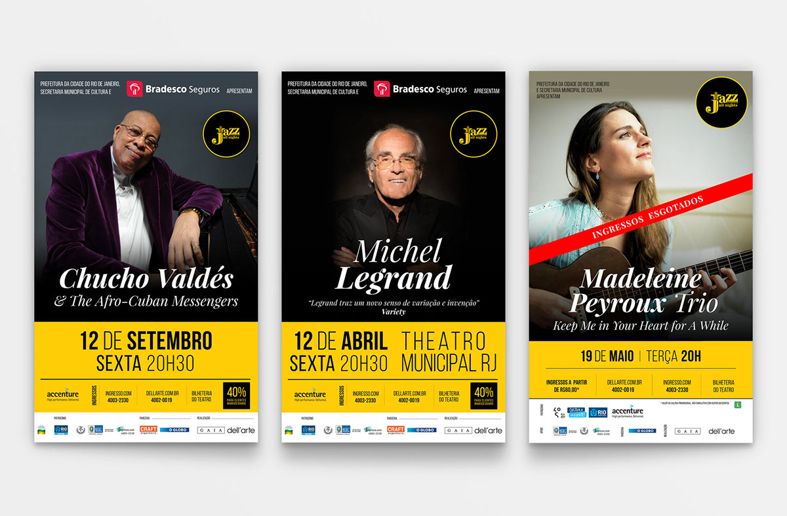
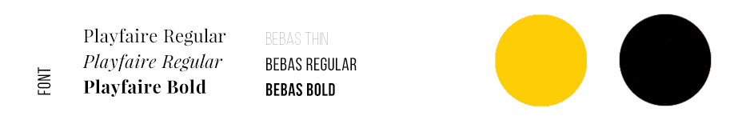
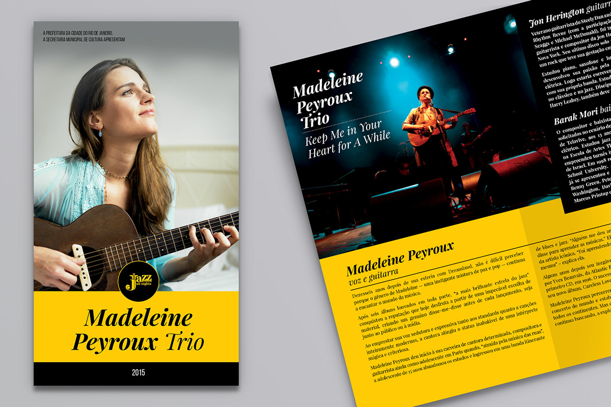
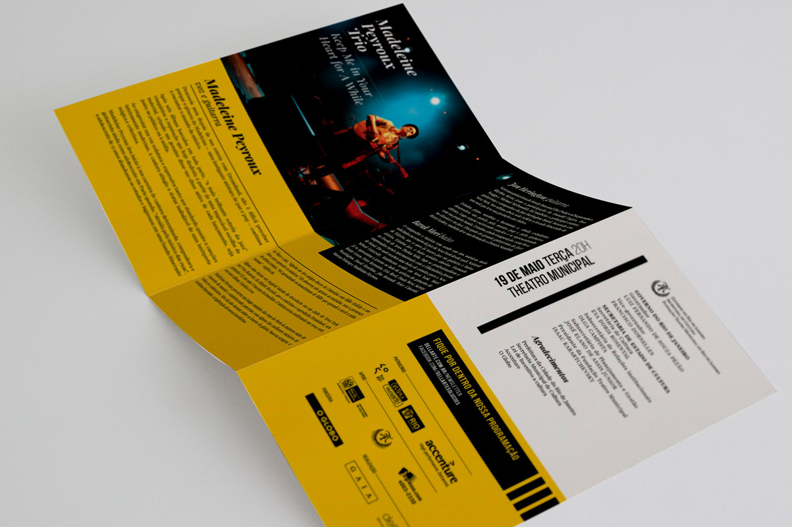
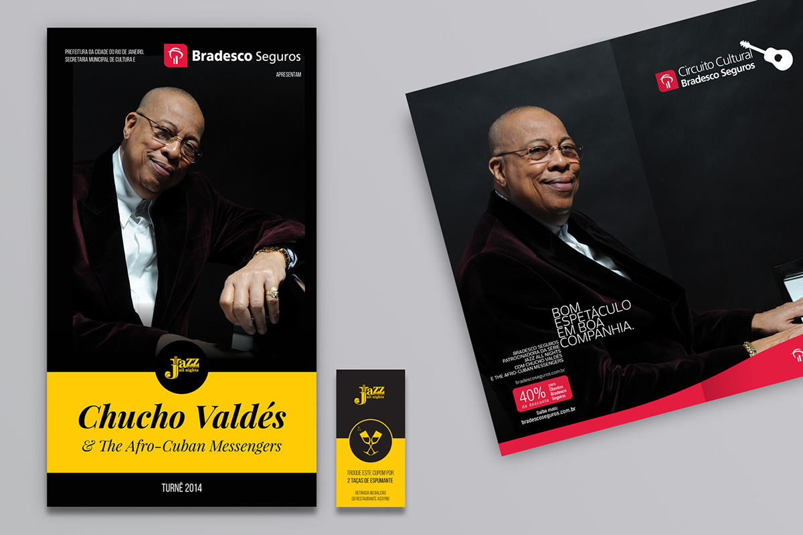

Série Jazz All Night
Identidade Visual
A Série Jazz All Nights foi criada em 2007 com o objetivo de criar uma nova ponte entre a plateia e o gênero de música do jazz. A série se solidificou rapidamente como um dos principais eventos musicais no calendário do país e, em suas sete edições, já apresentou nomes do quilate de Toots Thielemans, Madeleine Peyroux, Freddy Cole, Terence Blanchard, Arturo Sandoval, Esperanza Spalding, Keith Jarrett, Brad Mehldau e Preservation Hall Jazz Band.
A identidade criada dialoga com técnicas modernas de ilustração 3D, cores voltadas para mídias digitais (RGB), tipografia sem serifa. Tem uma atmosfera espacial, a imagem pode ser interpretada como um eclipse, um surgimento de um novo momento na música erudita.




